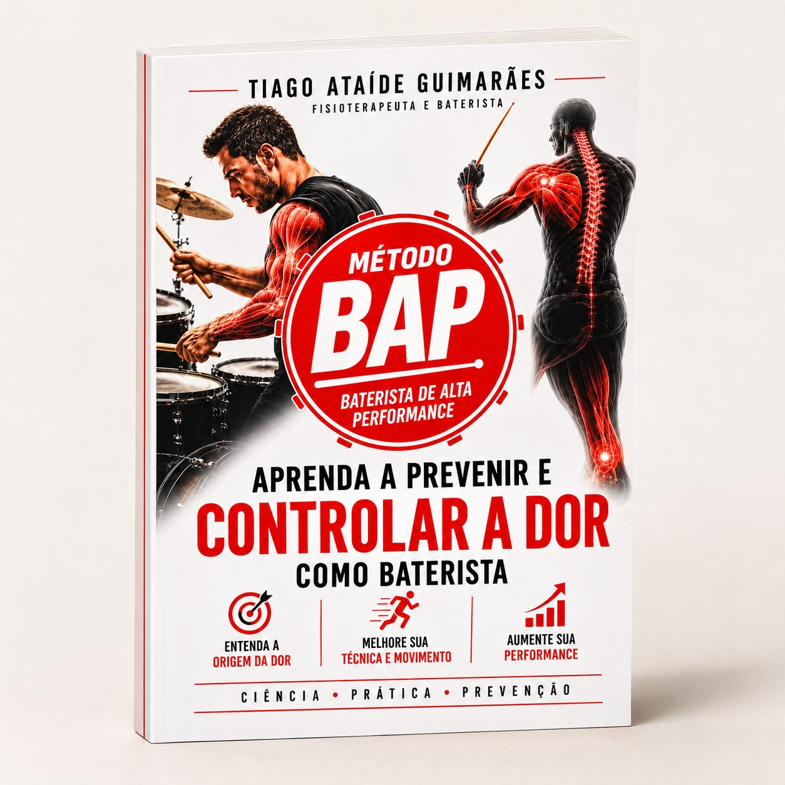
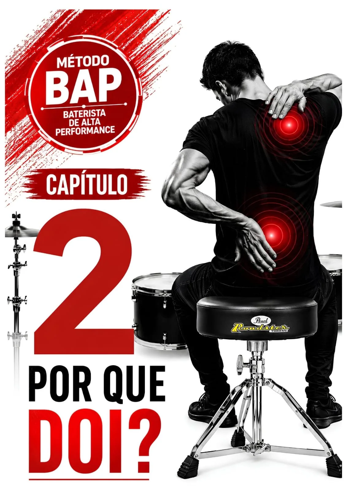
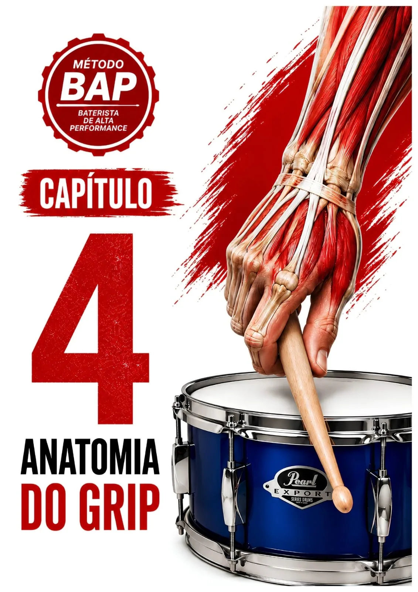
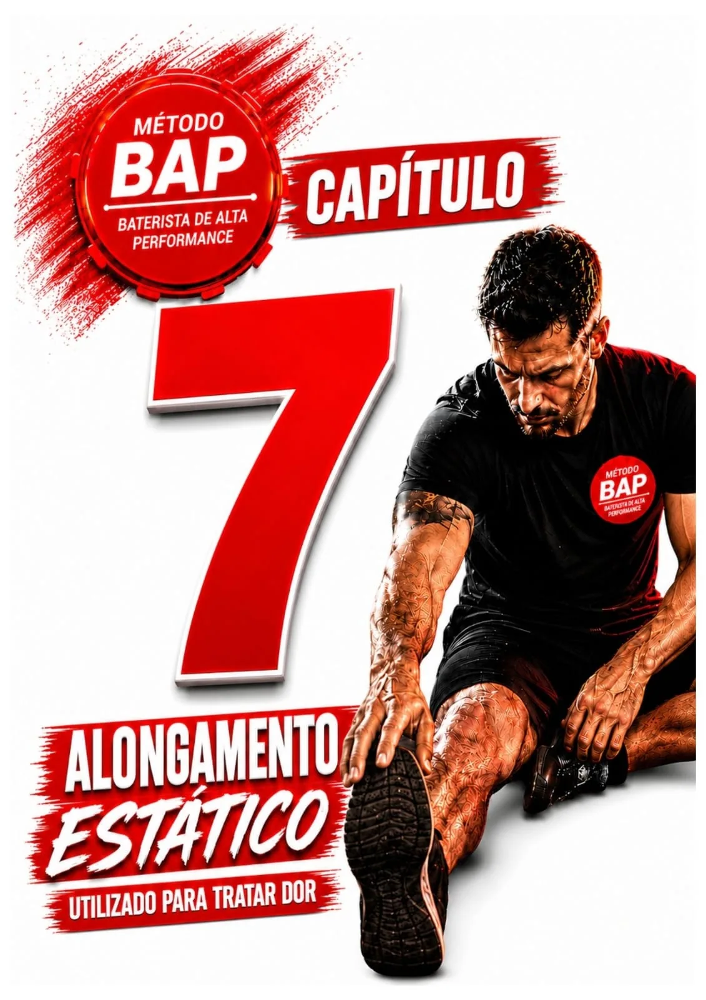
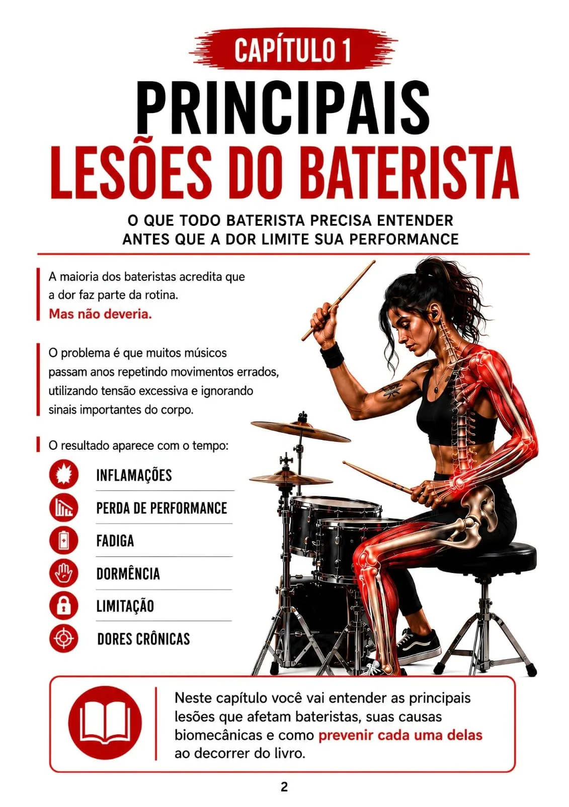
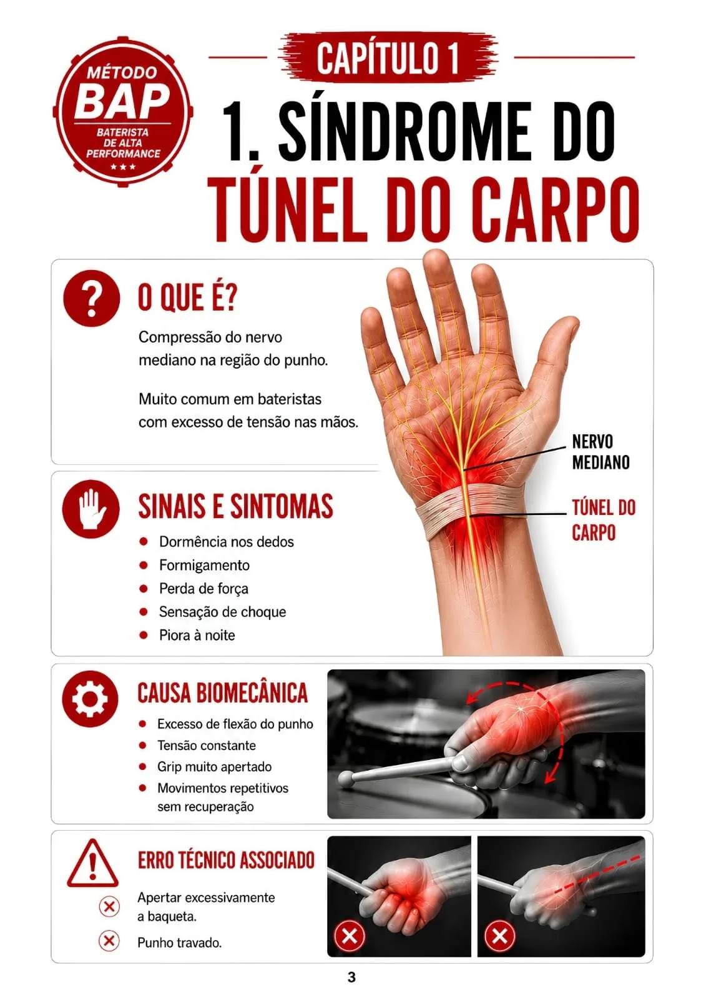
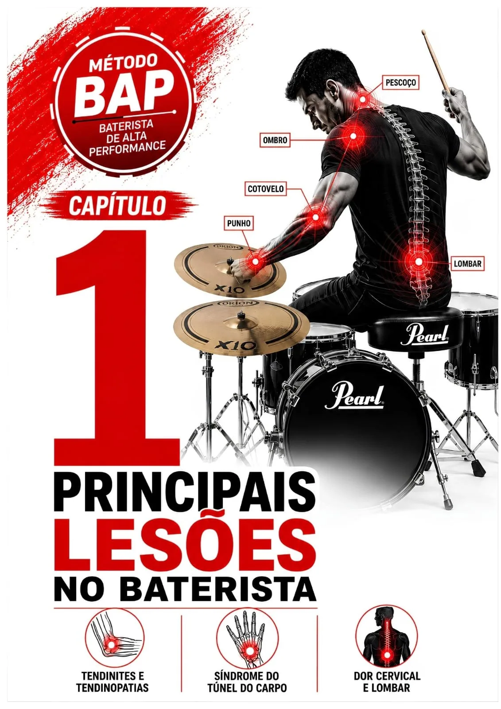
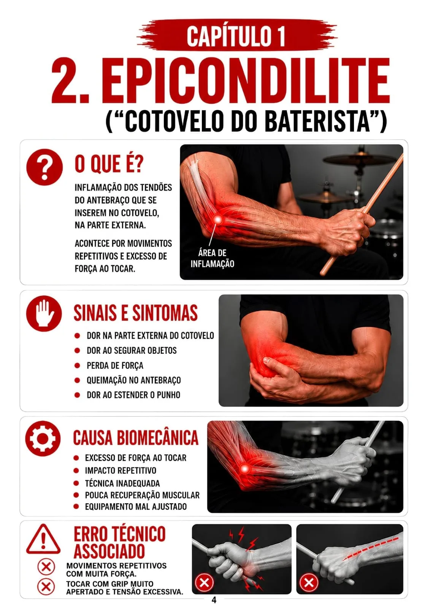

BATERISTA
BATERISTAProfessores
Conteúdo técnico e prático para aplicar com seus alunos.

CIÊNCIA · PRÁTICA · PREVENÇÃOO LIVRO / MÉTODO BAP
Aprenda a prevenir e controlar a dor como baterista.
Transforme conhecimento sobre o corpo em uma prática mais consciente. Anatomia, ergonomia e preparação corporal conectadas à sua rotina na bateria.
ADQUIRA O LIVRO MÉTODO BAP AGORACompra realizada na Freenote. Consulte preço e disponibilidade na loja.
ANTES DE VIRAR A PRIMEIRA PÁGINA
Entenda a proposta do livro e explore os assuntos antes de comprar.
O Método BAP — Baterista de Alta Performance aproxima o conhecimento do corpo das exigências de tocar bateria. A proposta é reconhecer situações de sobrecarga e construir hábitos de estudo e execução mais conscientes.
Tiago Ataíde Guimarães conecta sua experiência como fisioterapeuta e baterista a conceitos de anatomia funcional e biomecânica, com orientações práticas para olhar de outra forma para o instrumento e para o próprio movimento.
Conteúdo educativo e informativo; não substitui avaliação individualizada por um profissional de saúde.
Os dados abaixo são do anúncio da Amazon e se referem exclusivamente à edição digital. As características da edição vendida na Freenote devem ser conferidas na loja.
Fonte: cadastro da Amazon.es, consultado em 20/11/2026. A compatibilidade com dispositivos depende da edição e do aplicativo Kindle.
01 / CONHEÇA O LIVRO
O Livro Método BAP reúne conhecimentos de fisioterapia, biomecânica e ergonomia aplicados à bateria.
Com linguagem acessível e uma abordagem visual e didática, conecta conceitos e estratégias práticas à sua rotina de estudo e performance.
DESCRIÇÃO E FICHA TÉCNICAPARA QUEM VIVE A BATERIA
Um recurso para aprender, ensinar e olhar com mais consciência para a prática musical.
Conteúdo técnico e prático para aplicar com seus alunos.
Material de referência para cursos e formações.
Consciência corporal desde os primeiros estudos.
Atenção à performance e à longevidade na carreira.
Conhecimento para cuidar da sua prática ao longo dos anos.
02 / AMOSTRAS DO LIVRO
Explore páginas do livro. Toque em uma amostra para ampliar e navegar pelas imagens.







CIÊNCIA QUE ENCONTRA A PRÁTICA
Fundamentos de anatomia, biomecânica e ergonomia aplicados ao instrumento.
Explicações claras, ilustrações e exercícios para conectar teoria e prática.
Conhecimento para construir hábitos mais conscientes e uma prática sustentável.
SEU PRÓXIMO PASSO
Invista no conhecimento sobre seu corpo, sua técnica e sua longevidade como baterista.
ADQUIRA O LIVRO MÉTODO BAP AGORA VER AMOSTRAS DO LIVRO